Kapper en beautysalon in Ede
Eindelijk een kapper die je krullen snapt.
Bij Studio Glow knippen we krullen droog, in hun natuurlijke vorm, met een kniptechniek die eigenaresse Marjolijn zelf ontwikkelde. Steil haar, een kleurverandering, extensions of je wenkbrauwen? Daarvoor ben je hier net zo welkom.
4.9 uit 273 Google-reviews
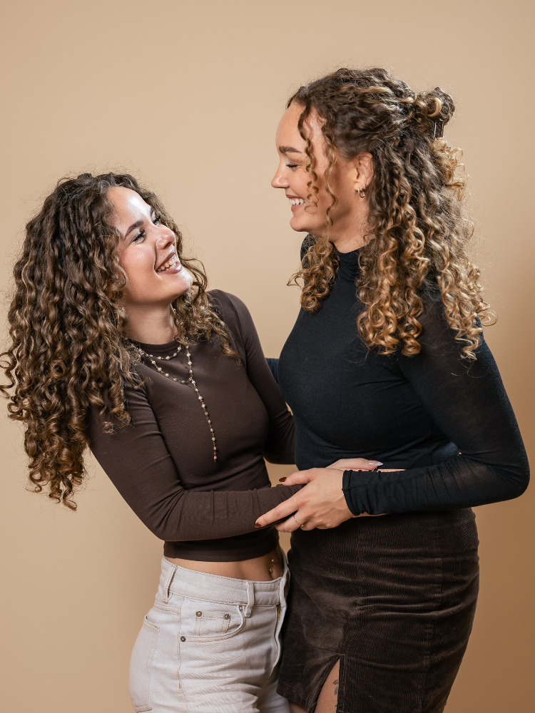
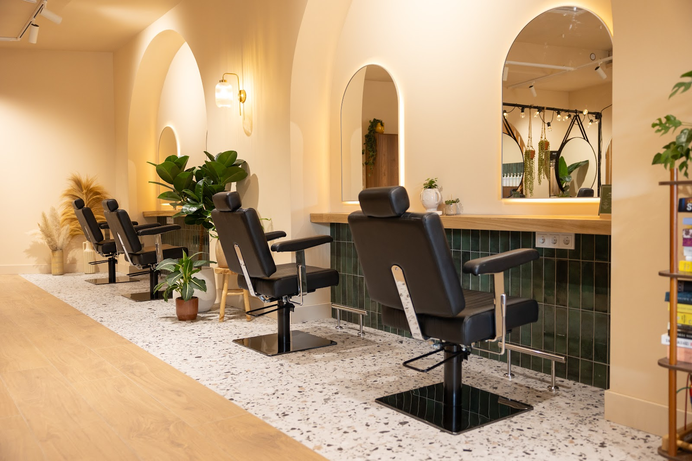
Krullen knippen we droog, krul voor krul.
Marjolijn had zelf jarenlang moeite met haar krullen. Op de kappersschool leerde ze er weinig over, dus leerde ze het zichzelf: na jaren training en talloze modellen ontwikkelde ze een eigen kniptechniek. Die leert ze nu aan de krulspecialisten in de salon.
We knippen je haar droog in zijn natuurlijke vorm, zodat elke krul de juiste definitie krijgt. Met een voedende verzorging verminderen we pluis en versterken we de veerkracht. Heb je slag, krullen, kroes of iets daartussenin? Dan ben je bij ons aan het juiste adres.
Boek je via de online agenda, dan word je automatisch gekoppeld aan een stylist die krullen knipt.
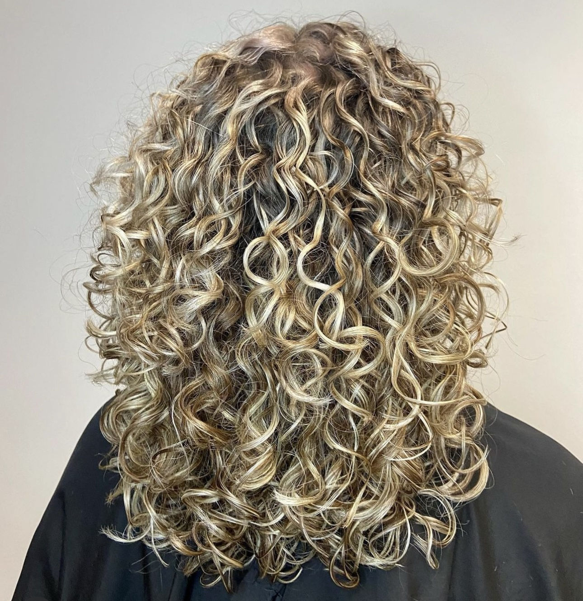
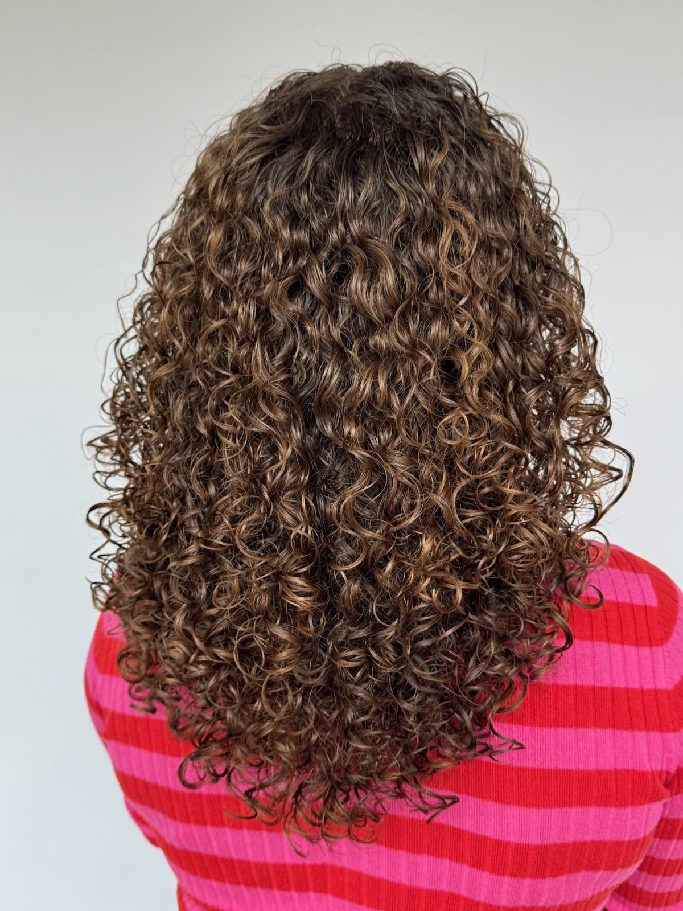
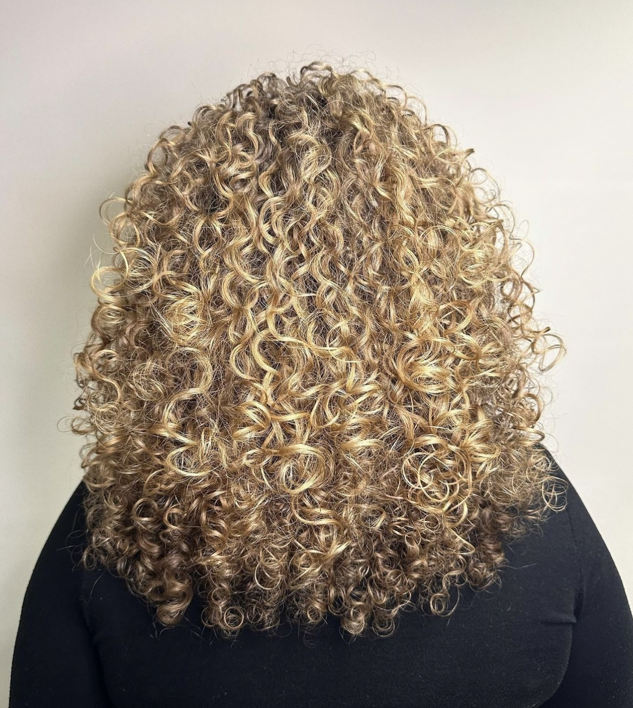
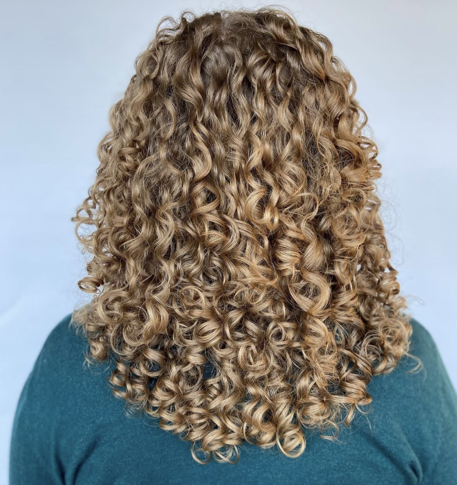
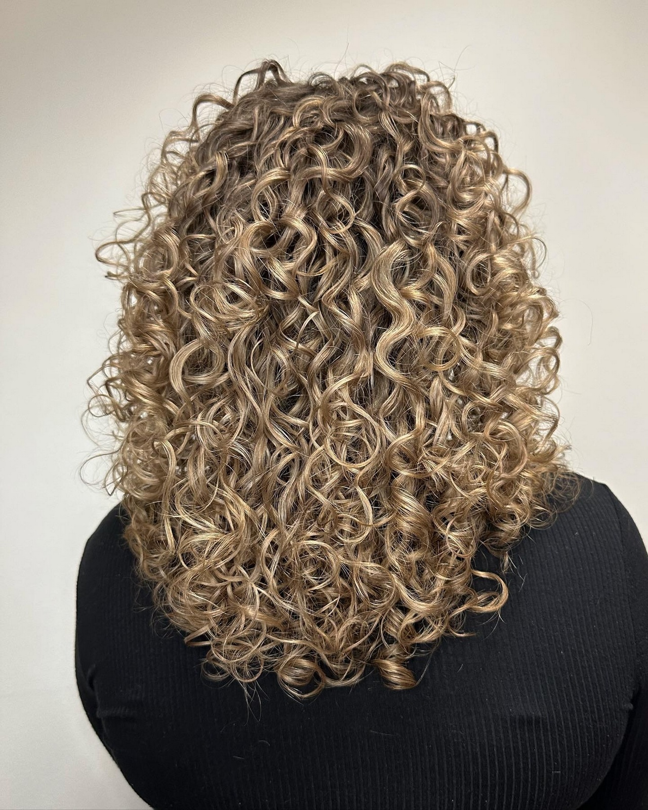
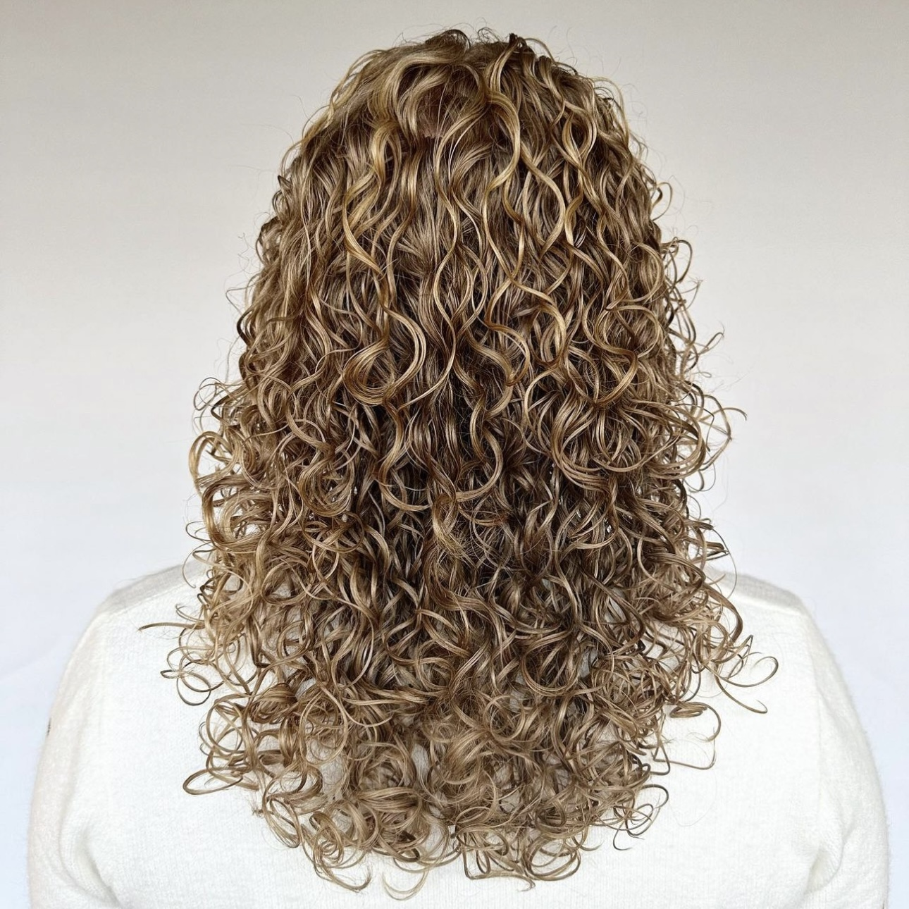
We werken met Pretty Curly Girl, REF en Oli G, en een deel daarvan is CG-proof. Verliefd op je eigen producten? Neem ze gerust mee naar je afspraak.
Echt steil haar? Ook dan ben je van harte welkom voor een knip- of kleurbehandeling.
Ook voor kleur, extensions en beauty.
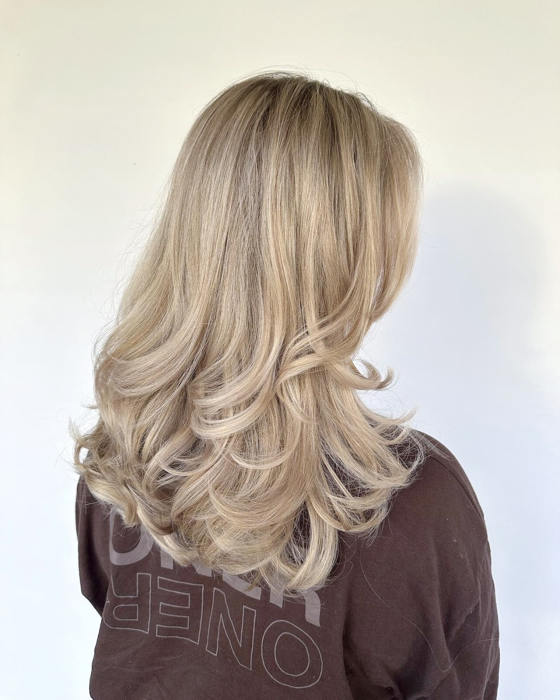
Kleur en blond
Een stralende platinablonde look, subtiele highlights of een natuurlijke balayage: meerdere stylisten in het team zijn gespecialiseerd in kleur en blond. Voor een toffe kleurverandering kijken we eerst samen wat bij jou en je haar past.
Je kiest zelf wie je helpt: een Allround Stylist, Topstylist of The Founder. Het prijsverschil zit in ervaring, specialisaties en niveau. De tarieven zie je bij het boeken.
Extensions met invisible beads
Voller of langer haar zonder zichtbare aanhechtingen. De banen worden nauwkeurig geplaatst, zodat je haar natuurlijk valt en je geen beads ziet. Het voelt licht en beweegt mee met je eigen haar. We werken met Blend Your Hair en YELL SL, in glad, met slag of met een volle krul. Ja, ook krullende extensions.
Vraag een adviesgesprek aan- 1Je boekt een adviesgesprek. Dat is bij extensions altijd nodig.
- 2We beoordelen je haar en kiezen samen de kleur en structuur.
- 3Je krijgt een duidelijk en eerlijk advies: hoeveel banen en hairwefts je nodig hebt.
- 4We bestellen jouw extensions in jouw kleur en structuur.
- 5Je komt terug en we plaatsen de invisible weft.
Wenkbrauwen en wimpers
Studio Glow is ook beautysalon. Wil je een combinatie? Niets is te gek.
- Brow shaping
- Met browmapping meten we je wenkbrauwen nauwkeurig op en tekenen we de vorm die bij je gezicht past. Daarna verf op kleur en waxen of epileren.
- Brow lift
- De haartjes worden in een rechte, gelifte positie gezet. Je wenkbrauwen ogen voller en stylen is veel makkelijker. Verven is inbegrepen.
- Lash keratin lift
- Gelifte, gekrulde wimpers met een natuurlijke uitstraling, afgesloten met een keratine booster. Gemiddeld 6 tot 8 weken zichtbaar.
Wat klanten zeggen.
4.9 uit 273 reviews op Google
"De aller, allerfijnste kapper! Bij diverse kappers m'n haar laten knippen (en een keer kleuren), ieder van hen is hartstikke kundig. Begrijpen haar-structuren goed en wat het nodig heeft. Daarnaast is het een fijne zaak om te zijn, mooi vormgegeven en er wordt goed voor je gezorgd. Het is écht een uitje :)."
"Weer super blij met het eindresultaat! Bij Studio Glow kijken ze goed naar je haar, geven ze goede en waardevolle adviezen. In mijn geval DE kapper voor het knippen van mijn krullen."
"Ik kom heel graag bij Studio Glow! De medewerkers zijn vriendelijk en het is een fijne salon. Anouk heeft mij goed geholpen om mijn haar weer mooi en gezond te krijgen. Ze is erg goed met verven, het creëren van bouncy krullen en adviseren over haarproducten."
"Heel fijn bedrijf . Goeie sfeer en je haar word kundig en mooi gedaan . Ik zeg een dikke pluim voor jullie . Dank je wel"
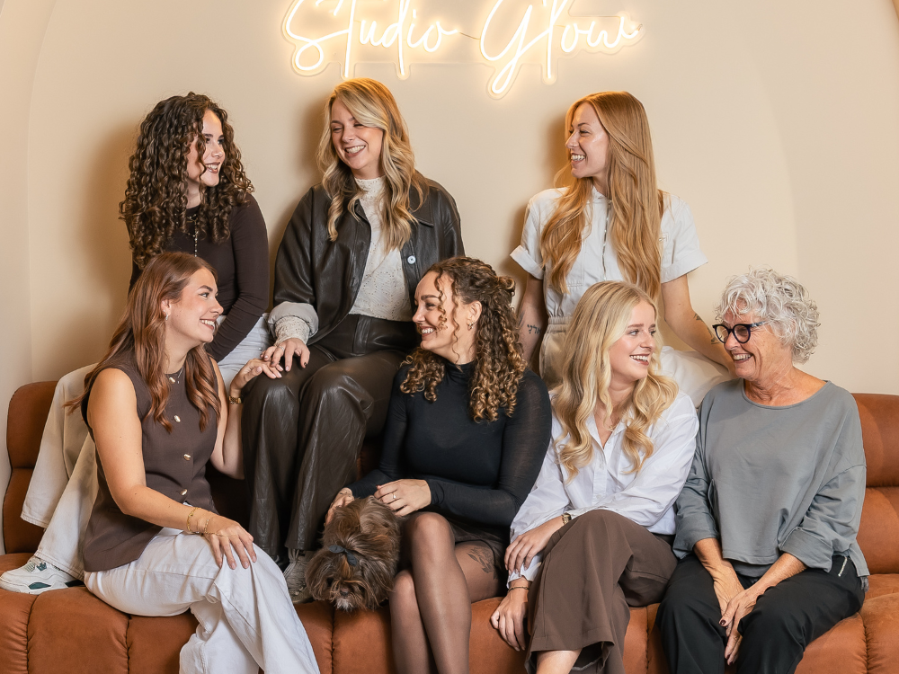
Het team
Een gezellige, maar ook vaardige salon. Kwaliteit gaat bij ons boven kwantiteit: we blijven trainen en leiden zelf studenten op tot topkappers.
- Marjolijn BorkentEigenaresse
- Anouk SandersTopstylist, krullen en kleur
- Wendy van WichenTopstylist, blondspecialist
- Merel van SchaaijkTopstylist, blond en föhnwerk
- Femke van EmdenTopstylist, kleur en krullen
- Laura HuigenHairstylist, krullen, brows en extensions
- Tamar AlgraJunior stylist
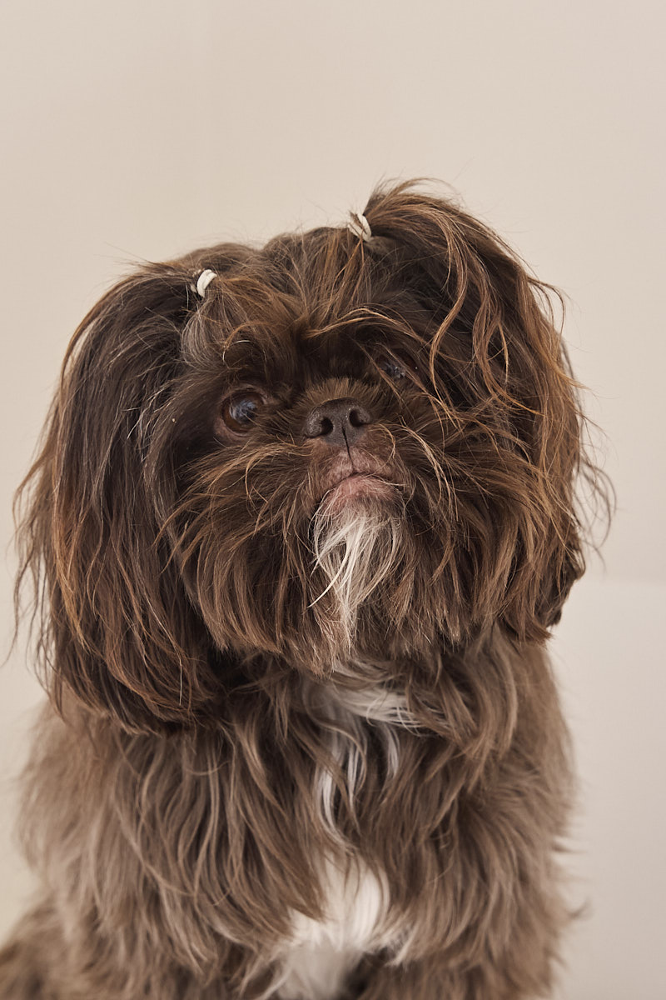
En dan is er Charlie
Ben je fan van kleine hondjes, dan heb je extra geluk. Onze salonhond Charlie is er vaak en vindt het ontzettend gezellig om je te begroeten.
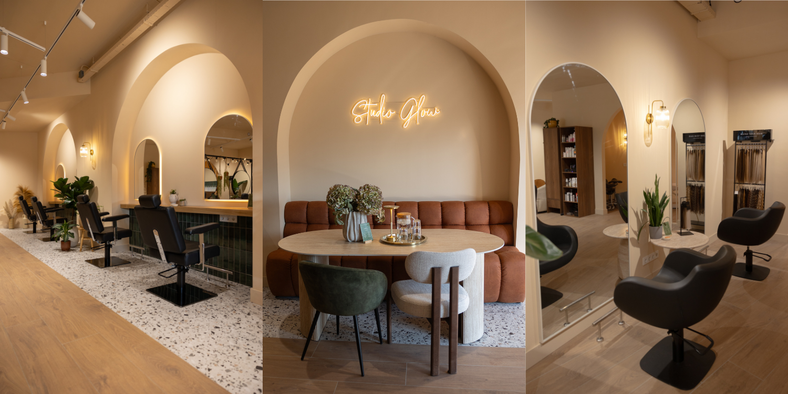
Kom langs aan de Telefoonweg.
Bel of mail voor een afspraak of vraag. Wil je een voorkeur voor een stylist, geef dat dan gerust aan.
Studio GlowTelefoonweg 80A
6713 AL Ede Route plannen
Openingstijden
- Maandag
- 09:00 tot 18:00
- Dinsdag
- 09:00 tot 20:00
- Woensdag
- Gesloten
- Donderdag
- 09:00 tot 20:00
- Vrijdag
- 09:00 tot 18:00
- Zaterdag en zondag
- Gesloten